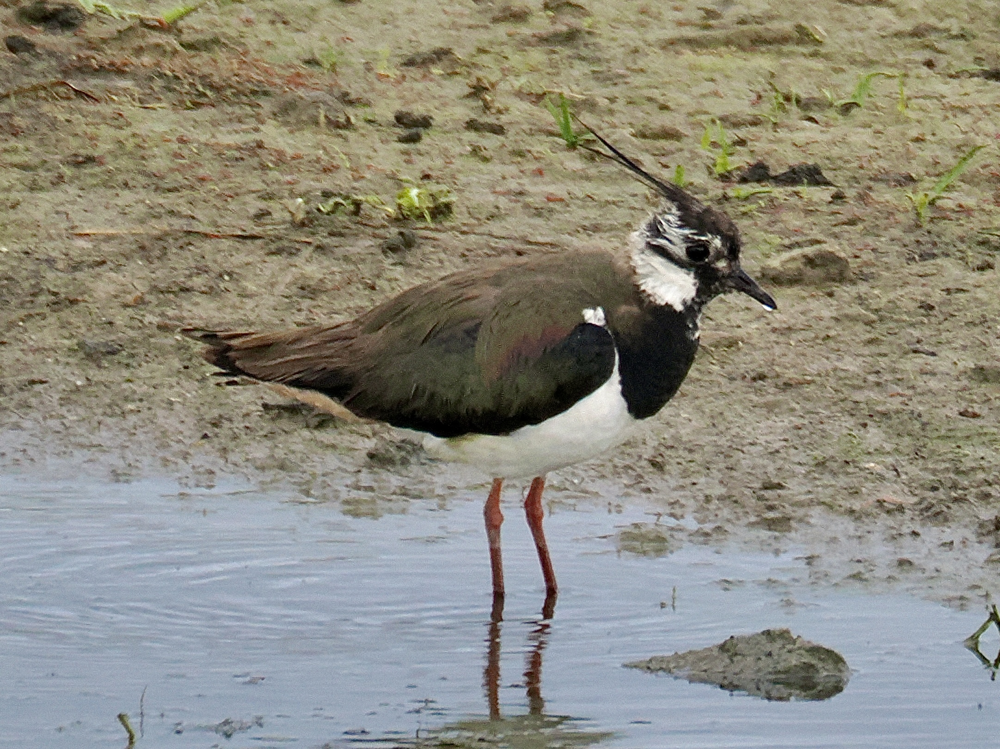
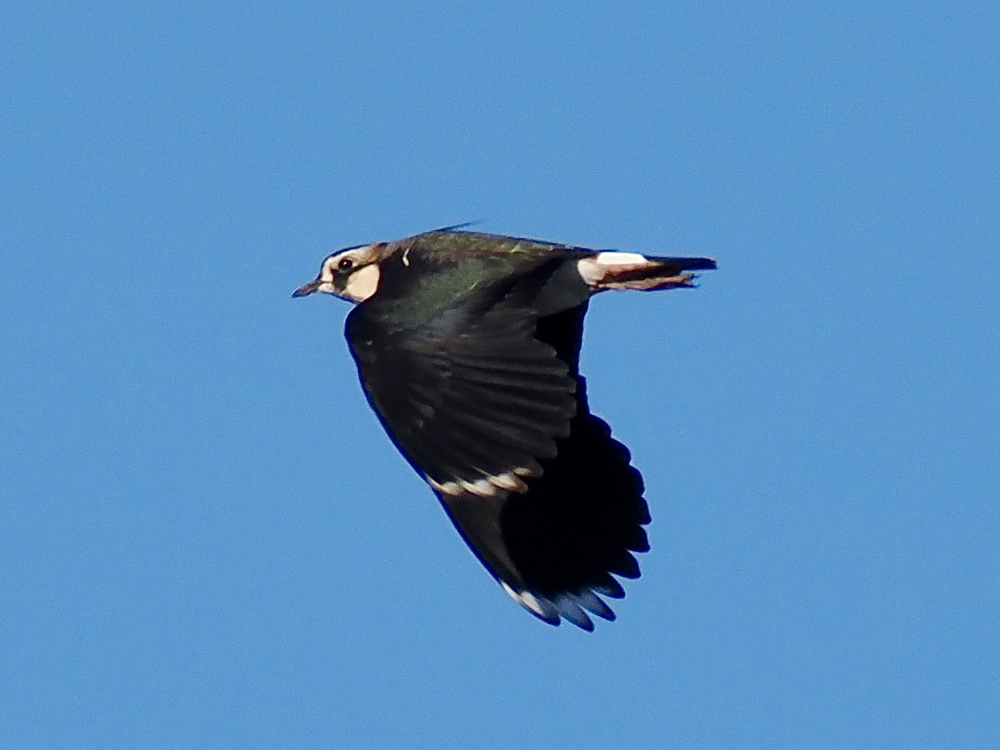

Northern Lapwing
Vanellus vanellus
Order: Charadriiformes
Family: Charadriidae

A plover with green upperparts that has an iridescent sheen. Crown and breast are black; a long black tuft also emerges from the back of the head. Also known as Green Plover or Peewit. Found in large flocks in wetlands, sometimes tapping one foot in the mud to lure out invertebrates (rain dance).

Flies with slow, floppy wingbeats that give their name. In display flight, male gives a bizarre song which sounds almost electronic and mechanical.